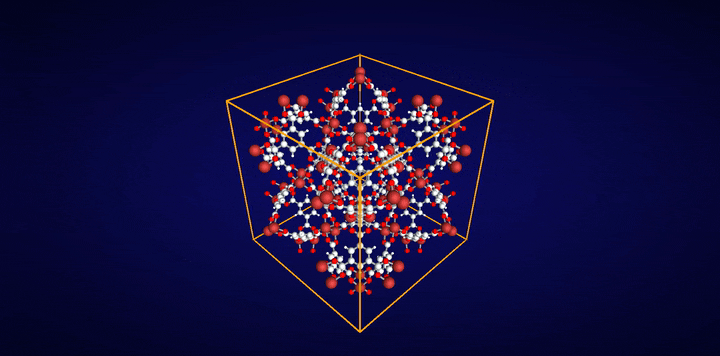

%%{init: {'themeVariables': {'fontSize': '16px'}, 'flowchart': {'htmlLabels': true, 'curve': 'basis', 'nodeSpacing': 28, 'rankSpacing': 40, 'padding': 16}}}%%
flowchart TB
V("<b>Just curious?</b>")
E("<b>A few MOFs?</b>")
G("<b>Scripts / agents?</b>")
R("<b>Research / ML?</b>")
HF("<b>Web demo</b> ③<br/>No install · hosted")
CLI("<b>CLI + app</b> ②<br/>Local · mgr_cli_py")
LIB("<b>Library</b> ①<br/>Fastest · this repo")
V --> HF
E --> CLI
G --> CLI
R --> LIB
classDef ask fill:transparent,stroke:#94a3b8,stroke-width:1.5px,stroke-dasharray:4 3
classDef hf fill:#f9731614,stroke:#f97316,stroke-width:2.5px
classDef cli fill:#14b8a614,stroke:#14b8a6,stroke-width:2.5px
classDef lib fill:#8b5cf614,stroke:#8b5cf6,stroke-width:2.5px
class V,E,G,R ask
class HF hf
class CLI cli
class LIB lib
linkStyle 0 stroke:#f97316,stroke-width:2px
linkStyle 1,2 stroke:#14b8a6,stroke-width:2px
linkStyle 3 stroke:#8b5cf6,stroke-width:2px
mofography
Characterization toolkit for MOFs, zeolites, polymers, and other periodic nanoporous materials
Features · Who is it for? · Cite · Contributing · Acknowledgments

Mofography segments the void space of periodic nanoporous materials (any structure with a valid unit cell, periodic in all three directions) into pockets and builds pore graphs from them. One segmentation gives you global and pocket-level textural properties, pore types, windows, and percolation, plus interactive 3D views and graph descriptors for screening and machine learning (see Features).
Core numerics run in a Rust backend (mgr_rust) behind a Python API.
The path from a CIF file to that graph is the Quick start. To install, see the install page; all tutorials are in Learn and every function is in Functions.
Canonical code: mofography/mofography · Latest release:
2026.10.09.1· branchmaster
Features
Everything below is available from the Python module. Global properties and pocket-level properties come from the same segmentation, so you can go from a material-level number down to the individual pore that produced it.
| Capability | What you get | Learn more |
|---|---|---|
| Pore diameters | Largest cavity diameter (LCD), pore limiting diameter (PLD), and largest included sphere (LIS) along percolating pathways | Compute pore diameters, PLD and percolation |
| Surface area and void volume | Total (probe-center occupiable) and accessible (probe-center accessible) values, globally and per pocket | Surface area, Property calculation |
| Pore size distributions | Global distributions, and pocket-wise distributions that do not undersample small pockets | Pore size distributions |
| Pocket segmentation | The void space split into convex pockets with periodic boundary conditions handled | Region segmentation, PBC considerations |
| Pocket types | Fingerprinting of pockets by their local environment, to group chemically and geometrically similar pores | Pocket type detection |
| Pore windows | Detection of the windows that connect pockets, including across periodic boundaries | Connections and windows, Window fingerprinting |
| Pore graphs | Pockets as nodes and windows as edges, annotated with local properties, as input for analysis and graph learning | Region adjacency graph, PoroNet |
| Percolation | Percolation thresholds for a given probe, and 3D plots of the accessible, percolating clusters of pockets | PLD and percolation |
| Visualization | Interactive 3D views of the framework, pore surfaces, pockets, and pore graphs | Visualization |
| High throughput | Parallel characterization of whole databases with a Rust core | High-throughput characterization |
Not a Python user? The same core is available as a CLI (mgr_cli_py) for terminal users and AI agents, and as a web app for anyone who prefers a GUI and does not code or use a terminal. Both expose a subset of the features above; see Who should use what.
Using an AI coding agent? Copy skills/mofography/SKILL.md into your agent’s skills folder (for Claude Code, .claude/skills/mofography/) so it knows the Python API, the textural-property and percolation functions, and common pitfalls.
Who should use what?
Pick your path by role. Three tools, one shared science core:
- ① Library — this repo (
mofographyorg) - ② CLI + Streamlit —
mgr_cli_py(personal repo) - ③ Web demo — Hugging Face Space (hosted)
| ① Library (this repo) | ② CLI + web app (mgr_cli_py) |
③ Web demo (HF) | |
|---|---|---|---|
| Best for | Papers, notebooks, HTS, custom analysis | A few structures, interactive UI, automation without a full env | Try before you install |
| Install | Clone + build mgr_rust (install page) |
Separate repo; pip install -e . + Rust (README) |
None — open demo |
| Performance | Fastest on your hardware (--release, tuned to your CPU) |
Fast locally; extra caching vs library | Shared queue, ~2 vCPUs — often slower than local; 16 GB RAM helps large cells |
| Maintainer | mofography org |
Personal repo arung-northwestern/mgr_cli_py (will go public; PRs via maintainer) |
Hosted demo only |
| AI / agents | import mofography in code |
mgrcli subprocess — no notebook context |
Not for batch/agent pipelines |
Tip: For serious work on medium/large cells, prefer ① or ② on your machine. Use ③ to explore the UI and export HTML; expect queueing at busy times.
Self-hosted web app: clone mgr_cli_py, install, then run Streamlit interactive mode (see that repo’s README). It is not the same package as pip install mofography from this tree.
Cite this code
- Software: release tag
2026.10.09.1+ commit hash — releases and citing, CITATION.cff. - Main methods paper: A. Gopalan, C. Zheng, B. Azadpour, K. Shi, L. Sarkisov. Advanced High-Throughput Characterization of Nanoporous Materials using Pore Graphs. ChemRxiv 2026. doi:10.26434/chemrxiv.15011793/v1
- Other relevant papers:
- Pore graph (machine learning): C. Zheng, A. Gopalan, K. Shi. PoroNet: An Intrinsically Interpretable Pore Graph Neural Network for Resolving Pore-Level Adsorption in Metal–Organic Frameworks. J. Chem. Theory Comput. 2026, 22 (11), 5716–5730. doi:10.1021/acs.jctc.6c00100
- Software benchmark: C. Zheng, A. Gopalan, K. Shi. Revisiting Percolation and Molecular Diffusion in Disordered Pore Networks. ChemRxiv, 25 October 2026. doi:10.26434/chemrxiv.15011012/v1
BibTeX
@article{gopalan2026mofography,
title = {Advanced High-Throughput Characterization of Nanoporous Materials using Pore Graphs},
author = {Gopalan, Arun and Zheng, Chao and Azadpour, Behnam and Shi, Kaihang and Sarkisov, Lev},
journal = {ChemRxiv},
year = {2026},
doi = {10.26434/chemrxiv.15011793/v1},
url = {https://doi.org/10.26434/chemrxiv.15011793/v1}
}
@article{zheng2026poronet,
title = {{PoroNet}: An Intrinsically Interpretable Pore Graph Neural Network for Resolving Pore-Level Adsorption in Metal--Organic Frameworks},
author = {Zheng, Chao and Gopalan, Arun and Shi, Kaihang},
journal = {Journal of Chemical Theory and Computation},
year = {2026},
volume = {22},
number = {11},
pages = {5716--5730},
doi = {10.1021/acs.jctc.6c00100}
}
@article{zheng2026percolation,
title = {Revisiting Percolation and Molecular Diffusion in Disordered Pore Networks},
author = {Zheng, Chao and Gopalan, Arun and Shi, Kaihang},
journal = {ChemRxiv},
year = {2026},
doi = {10.26434/chemrxiv.15011012/v1},
url = {https://doi.org/10.26434/chemrxiv.15011012/v1}
}import mofography as m
print(m.__version__, m.__git_revision__)Contributing and contributors
Bug reports, questions, and pull requests are welcome: open an issue or a pull request on mofography/mofography. If you add a function or a tutorial, mark its status (go-to, alternate, legacy, …) so the reference and the guide to choosing functions stay accurate. Using an AI coding agent? See the agent skill.
Contributors: Arun Gopalan (lead developer), Chao Zheng, Kaihang Shi, Joe Manning. The method paper adds Behnam Azadpour and Lev Sarkisov as authors (see Cite this code).
Acknowledgments
This material is based upon work supported by the ACS Petroleum Research Fund under Doctoral New Investigator Grant 68604-DNI6 and NSF CAREER Award No. 2543449.
Scaffolding from the MolSSI Python Cookiecutter.